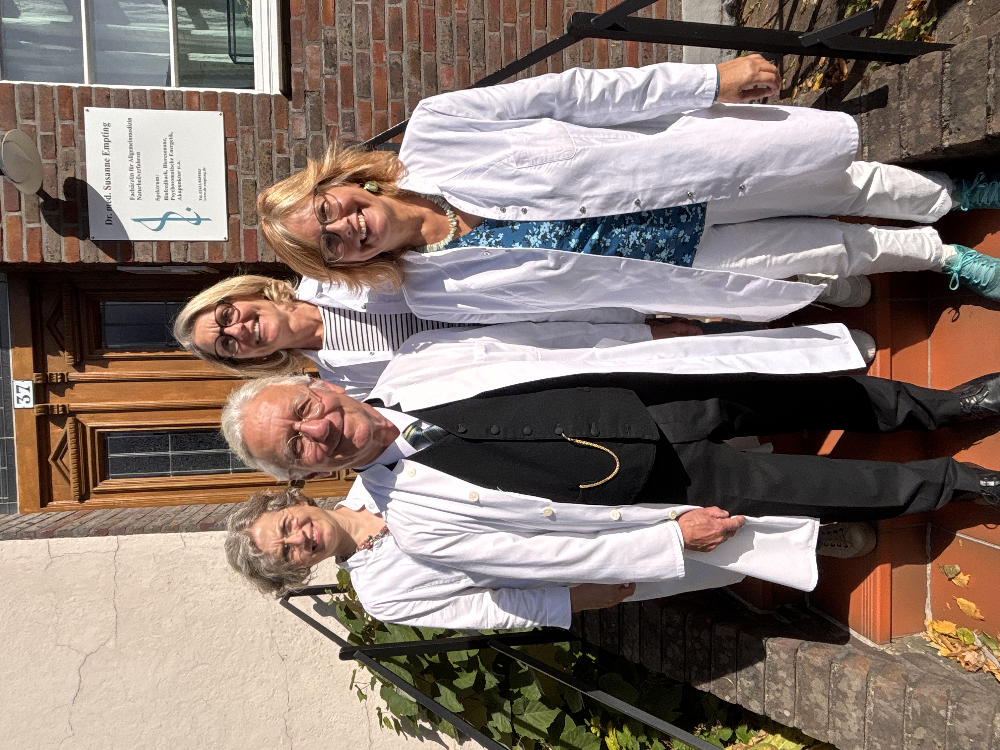

 Im Jahr 2025 feiert die Praxis Dr. Empting ihr 100-jähriges Bestehen. Zu diesem Anlass erschien ein Artikel in der Borkener Zeitung, den sie
hier lesen können.
Chronologie der Praxis der Dres. Empting
Heinrich Empting wurde 1891 als Sohn eines Försters in Lüdinghausen geboren. Er wuchs hier auf der Burg Kakesbeck auf, zog für sein Abitur nach Coesfeld und studierte ab 1910 Medizin in Freiburg, Münster, Kiel, Berlin und Bonn. 1915 machte er sein Staatsexamen und erwarb den Doktorgrad.
Das Praktische Jahr absolvierte er am Clemenshospital in Münster. Wegen seines Eintritts ins Heer erhielt er vorzeitig die Approbation. Ab 1916 war als Assistenzarzt, später als Regimentsarzt, zu Wasser und zu Lande im Baltikum und in Finnland tätig. 1918 wurde er nach Frankreich abkommandiert.
Ab 1919 praktizierte er in der Chirurgie in Hagen, der Inneren Station in Elberfeld und der Hebammenlehranstalt in Paderborn.
Sein Weg führte ihn nach Borken, als sein Bruder Wilhelm 1919 Mieze te Kniepe heiratete und vom Schwiegervater die Leitung des Borkener Bankvereins übernahm. Auf der Hochzeit lernte Heinrich die Schwester der Braut, Ise te Kniepe, kennen und verlobte sich mit ihr.
1920 ließ sich Heinrich als praktischer Arzt in Borken nieder. Er erhielt die Zulassung durch die Krankenkassen; außerdem wurde er Bahnarzt und Knappschaftsarzt.
1921 heirate er Ise. Die Töchter Irmi und Marga wurden 1924 und 1927 geboren, Sohn Benno 1930.
1924 schenkte ihm der Schwiegervater für die Heilung von einer schweren Krankheit die Hälfte eines Grundstücks am Kuhm; die andere Hälfte erwarb er von der jüdischen Gemeinde für 1000 Dollar – die Inflation war gerade erst gestoppt worden, aber die Reichsmark war noch nicht eingeführt, so machte die Preisabsprache in einer stabilen Währung Sinn. Der Hausbau wurde begonnen.
Im Oktober 1925 konnte die Praxis eröffnet werden. Die Eheleute waren aber auch kulturell interessiert; sie reisten für Besuche von Museen und Theatervorstellungen bis nach Berlin und München und sammelten Gemälde etwa aus der gerade aufkommenden Stilrichtung der Neuen Sachlichkeit. Zur Sommerfrische ging es vorzugsweise nach Borkum; die Kinder fuhren ins Ferienlager nach Ameland. Das Schiff dorthin legte in Rees ab.
Anfang 1945 wurde das Haus durch Bomben beschädigt, blieb aber dank eines Nachbarn erhalten, der beherzt eine Brandbombe aus dem Fenster warf. Das Dach, die Fenster und die Zwischendecken konnten repariert werden. Die folgende Bombardierung im Mai dagegen, wobei die Innenstadt fast vollständig zerstört wurde, überstand das Haus, ebenso wie die Häuser der Nachbarn Empting, Dr. Claas, der Sparkasse und Dr. Müller.
Die Bezahlung während des Krieges und danach erfolgte oft in Naturalien wie Milch, Eiern und Butter; die Bergleute brachten Kohle mit.
1947 erkrankte der 17jährige Sohn Benno lebensbedrohlich an einer Lungenentzündung. In dieser hoffnungslosen Situation konnte gerade noch Penizillin beschafft werden, das während des Krieges in den USA erstmals industriell hergestellt worden war und von den Besatzungstruppen mitgebracht wurde, der deutschen Bevölkerung aber noch nicht zur Verfügung stand. Dieses erste Antibiotikum rettete sein Leben.
Hilfreich waren jetzt auch Lebensmittel-Pakete von Verwandten aus Amerika; bis zur Währungsreform 1948, die D-Mark ersetzte die aufgeblähte Reichsmark, hortete der Handel seine Waren in Erwartung einer adäquaten Bezahlung.
Benno studierte ab 1951 Medizin in Münster und Bonn, machte 1957 sein Staatsexamen und wurde promoviert. Anschließend arbeitete er in den Knappschaftskrankenhäusern Gelsenkirchen und Bottrop. 1959 heiratete er Hilde Kowollik. 1961 wurde die Tochter Susanne geboren.
Seit 1961 war Benno als praktischer Arzt am Kuhm tätig. Heinrich machte noch von 12 – 1 Sprechstunde und erledigte die schriftlichen Eintragungen für Benno, der bald bis zu 1500 Scheine im Quartal hatte.
1967 wurde das Chefarztsystem im Krankenhaus eingeführt. Für die Praxis bedeutete das, dass ihr dort keine Belegbetten mehr zur Verfügung standen.
Heinrich wurde von der Knappschaft pensioniert, und Benno wurde die Knappschaftspraxis übertragen. Heinrich starb 1968.
Benno bot die erste Sprechstunde des Tages ab 5 Uhr morgens an; die Arbeiter der Borkener Textilfabriken hatten so die Möglichkeit, sich noch vor Beginn der Frühschicht um 6 Uhr eine Spritze geben zu lassen und sich gegebenenfalls einen Krankenschein zu holen.
Seit 1971 war Benno, der auch ein kundiger Mechaniker war und seine Motorräder und ersten Sportwagen im Detail noch verbessern konnte, Arzt für Allgemeinmedizin.
Von 1993 bis 1995 führte er mit seiner Tochter Susanne eine Gemeinschaftspraxis. Benno verstarb 1997.
Susanne studierte zunächst Chemie und Niederländisch und schloss ihr Medizinstudium in Berlin, Essen und Münster mit dem Staatsexamen und der Promotion 1989 ab. Praktisch tätig war sie anschließend in der Inneren Abteilung in Plettenberg, in der JVA Bochum und in einer allgemeinmedizinischen Praxis in Stadtlohn. 1992 heiratete sie Dr. Heiner Teroerde. 1993 und 1994 wurden die Söhne Eelco und Jorden geboren.
Seit 1993 spezialisierte sie sich in der eigenen Praxis auf Naturheilverfahren wie Akupunktur, Bioresonanz, Frequenzmedizin, Homöopathie, energetische Therapien u.v.m. Unter anderem nahm sie 1999 an einer intensiven Akupunkturausbildung in Hangzhou/China teil.
1997 wurde die Praxis nach ökologischen und baubiologischen Kriterien erheblich umgebaut und erweitert.
2003 änderte sich der Status der Praxis. Die kurzen Zeitspannen für die Anamnese und Behandlung der Patienten und der restriktive Umgang mit Naturheilverfahren, die das kassenärztliche System bezeichnen, ließen keine andere Wahl: Die Verträge mit den gesetzlichen Krankenkassen wurden gekündigt. Fortan wurde die Praxis, um das Spektrum an Therapien adäquat anbieten zu können, als Privatpraxis für Naturheilverfahren betrieben.
Parallel dazu bildete Susanne sich bis zum heutigen Tage kontinuierlich fort. Sie machte mehrjährige Ausbildungen in Akupunktur, Homöopathie, bei der Foundation for Shamanic Studies Europe und in der NLS-Oberondiagnostik (Raumfahrtmedizin); außerdem schloss sie in der Augenakupunktur und weiteren energetischen Verfahren ab.
© Dr. Empting 2016-2025
Impressum